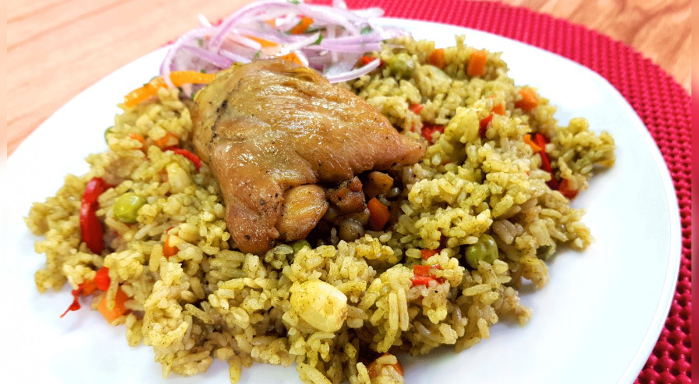

Arroz con Pollo

Description
Peruvian chicken rice is a staple in Peru, whether it's made with duck,
which is traditional in northern Peru, or chicken, which you might see further south.
Peruvian-style chicken rice can be made with rice that's grained until it almost resembles risotto,
or with traditional long-grain white rice.
Although this Peruvian chicken rice recipe uses a lot of cilantro, the flavor always ends up being mild and subtle,
so you can add any other unexpected flavors you feel like putting in.
Ingredients
- 1 1/2 cup cilantro leaves
- 1/4
cup of tender spinach
- 4
chicken thighs, skinless (about 1 pound)
- 4
bone-in, skinless chicken thighs (about 1.5 pounds)
- Salt, to taste
- Pepper, to taste
- 1/4
cup plus 1 tablespoon vegetable oil, divided
Instructions
- Place cilantro and spinach in the blender container. Cover and blend, adding enough water to make a smooth paste. Set aside.
-
Pat the chicken dry with a paper towel and season with salt and pepper. Place 1/4 cup oil in a deep skillet over medium heat.
Cook the chicken until golden brown on both sides, about 7 minutes. Remove from the pan and place on a plate lined with paper towels.
- In the same skillet, add onion, garlic, and yellow chili paste; cook and stir for 5 minutes. Add blended cilantro mixture; cook for 3 minutes.
Add beer, chicken broth, and chicken to skillet.
Bring to a boil, cover, and reduce heat. Simmer for 20 minutes. Season with salt and pepper, if necessary.
- In another skillet, heat 1 tablespoon of the oil.
Add the rice and stir. Add the peas, carrots, bell pepper, corn and 3 1/2 cups of the broth you used to cook the chicken.
Bring to a boil, cover and reduce the heat to the lowest setting possible.
Cook for 20 to 25 minutes. Stir with a fork and cover again.
- To make the salsa criolla: Soak the red onions in very cold water for 10 minutes to remove some of the acidity. Drain well and pat dry on paper towels to ensure the salsa is not watery.
In a medium bowl, combine the sliced onion, tomato, cilantro, lime juice, olive oil, yellow peppers (if using), and salt and mix well. Set aside.